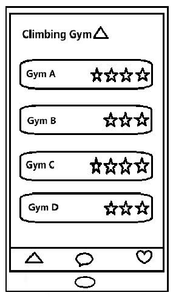
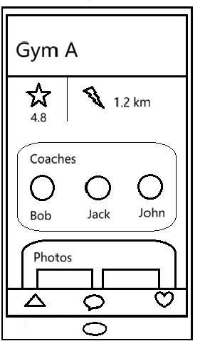
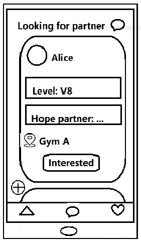
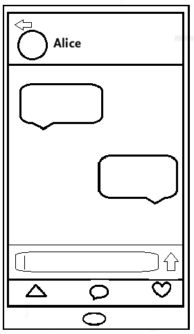
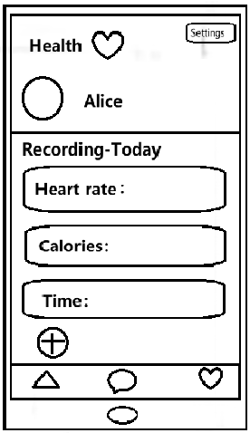
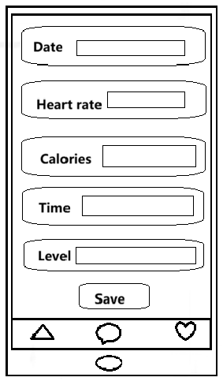
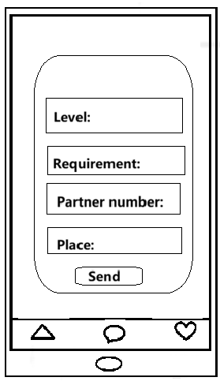
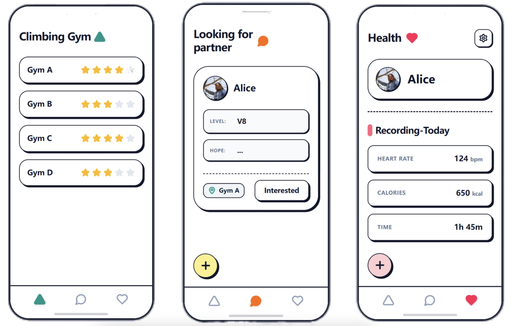
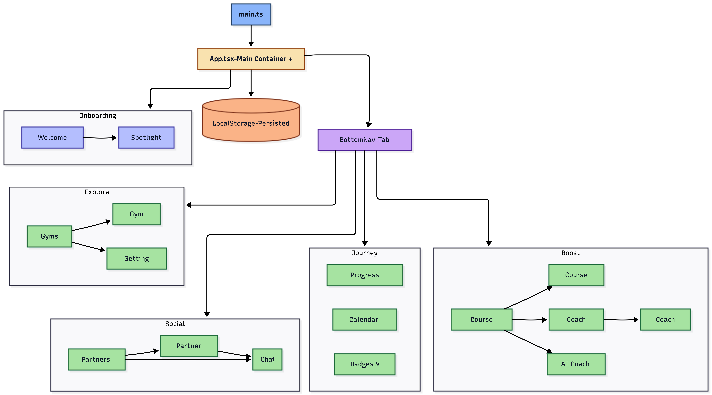

Welcome to Climbuddy
Climbuddy is a mobile and wearable app designed for the climbing community. It enables climbers to find partners at their skill level, book certified coaches, discover nearby climbing venues, and track their performance using wearable devices.
Our Team
Rui Zheng
ID: 2362065
Hangzhou. Chief Last-Minute Expert. Looks calm, panics internally.
Jiutian Chang
ID: 2362412
Libra ⚖️ | Chief Overthinking Officer. Powered by curiosity and an endless debate between "this one" or "that one".
Zhixian Zhou
ID: 2360690
Leo 🦁 | Chief Late-Night Officer. Powered by pure curiosity and chronic sleep deprivation.
Xinyi Xiao
ID: 2363303
Chief Anxiety Officer (CAO), Janja Garnbret self-shipper.
The Why
We chose the Active track because climbing is one of the fastest-growing urban sports in China, yet its digital support remains fragmented and socially isolating. Unlike conventional gym workouts, climbing inherently requires a partner — for safety, motivation, and progression — but no dedicated platform bridges partner-matching, gym discovery, coaching, and progress tracking in one connected experience.
Our team observed that climbers routinely juggle four or five separate tools: WeChat groups for finding partners, Xiaohongshu for gym reviews, Dianping for pricing, a coach's personal WeChat for bookings, and a generic fitness app for logging. This friction discourages beginners from continuing and limits experienced climbers from reaching their potential. The sport's social, skill-based, and progressive nature makes it uniquely suited for a playful digital companion.
Research on climbing technology has also increased in recent years, including movement analysis, training feedback, and technical support [1–3]. However, these advances remain inaccessible to everyday users. Climbuddy addresses this gap by integrating partner matching, a verified gym directory, certified coach bookings, and wearable-powered performance tracking into a single, low-friction app. Our two core aims: an Integrated Climbing Flow that removes fragmentation, and a Low-Pressure Playful Experience that keeps users motivated through gamified milestones and community recognition.
The Gap
Academic Papers
Addressing Grading Bias in Rock Climbing: Machine and Deep Learning Approaches — O'Mara & Mahmud, 2025
Did Well
- Applied AI/ML to reduce subjectivity in route grading
- Dataset-driven approach with measurable benchmark results
- Bridges sports science and HCI through computational modelling
Missed
- No user-facing application or interface designed for climbers
- Ignores social and partner-matching aspects of the sport
- Findings inaccessible to everyday beginners
ClimbingCap: Multi-Modal Dataset for Rock Climbing in World Coordinate — Yan et al., 2025
Did Well
- Multi-modal sensing (RGB, depth, IMU) captures body movement
- World-coordinate mapping enables precise motion analysis
- Strong technical foundation for future performance tools
Missed
- No consumer-facing app or UX layer for real-world use
- Requires specialised lab hardware, not wearable-ready
- No coaching recommendations or feedback loop for users
Sound-Assisted Climbing: Bouldering Performance Through Auditory Guidance — Sun et al., 2025
Did Well
- Novel sensory-feedback modality proven to improve performance
- Conducted rigorous user testing with real climbers
- Demonstrates technology can directly aid training on the wall
Missed
- Narrows scope to audio only — no visual or haptic integration
- No social or community dimension explored
- Lab-based setup; limited real gym deployment
Gamification in Fitness Apps: Effects on Motivation and Retention — Lister et al., 2014
Did Well
- Empirically links badge/leaderboard mechanics to sustained engagement
- User-centred methodology with broad fitness domain coverage
- Provides design principles directly applicable to activity apps
Missed
- General fitness focus — no sport-specific (climbing) context
- Does not address partner or coach discovery flows
- Long-term retention evidence remains limited
Commercial Products
Xiaohongshu (小红书)
Did Well
- Massive user base with rich photo/video gym reviews
- Strong community feel with comments and saves
- Effective for visual discovery and trend-driven content
Missed
- No climbing-specific filters (difficulty level, beginner-friendliness)
- Heavily influenced by promotional/sponsored content
- No partner-matching or coach-booking functionality
Dianping (大众点评)
Did Well
- Location-based gym search with map integration
- Aggregated star ratings and user text reviews
- Shows pricing and opening hours reliably
Missed
- Generic platform — no climbing-specific metadata (route setter, V-grade range)
- Reviews often vague and ad-polluted without climbing expertise
- No social layer for partner finding or progress sharing
WeChat Groups (微信群)
Did Well
- Familiar interface with high daily engagement
- Real-time coordination among trusted contacts
- Low barrier to entry — no new app required
Missed
- No structured matching by skill level or availability
- No profile verification or trust signals for strangers
- No progress tracking, coaching, or gym discovery features
8a.nu / TheCrag
Did Well
- Comprehensive global route database with community grading
- Personal logbook for tracking ascents and progression over time
- Established trust within the serious climbing community
Missed
- English-only UI — poor accessibility for Chinese domestic market
- No indoor gym directory or coach-booking integration
- No social partner-matching or beginner onboarding
User Personas
A newcomer seeking partners and structured learning to build confidence
Age: 18–25
Work: University Student
Location: China (university gym)
Climbing Level: Complete Beginner
Personality
Goals
- Find a partner of similar age and gender to climb with regularly
- Get structured guidance on safety and beginner technique (fall protection, muscle strengthening)
- Book a coach to establish proper fundamentals from the start
- Discover gyms that offer routes suited to all levels, especially beginners
- Learn in a flexible, self-paced way rather than relying on fixed club schedules
Frustrations
- Too shy to approach strangers at the gym; friends' schedules rarely align
- Has never booked a coach — process feels unclear and inaccessible
- Gym discovery relies on word-of-mouth, which is incomplete and inconsistent
- No climbing apps or wearables used — starting entirely from scratch
Bio
Emma just discovered climbing through her university gym. She goes less than once a week, mostly because she doesn't know anyone to climb with — she's too shy to approach strangers and her friends' schedules rarely match hers. She has a strong desire to find a same-age, same-gender partner and is extremely open to coaching, though she's never booked a session before. She finds current gym info channels unsatisfying and has never used any climbing-related app or wearable. With Climbuddy, Emma can find a compatible partner, book a beginner coach directly, and access safety tips and muscle-training guides — all in one place, on her own schedule.
An experienced climber and part-time coach who values route quality and community trust
Age: 18–25
Work: Part-time Climbing Coach
Location: Shanghai / Suzhou, China
Climbing Level: Advanced (~2 years)
Personality
Goals
- Access detailed, authentic gym info — route setter background, gym style, actual layout
- Discover quality gyms when travelling between Shanghai and Suzhou
- Share route videos and gym experiences within the climbing community
- Provide guidance to newcomers without managing complex logistics
Frustrations
- Review platforms (Xiaohongshu(小红书), Dazhong Dianping(大众点评)) are full of ads or too vague — no per-gym star ratings
- Gym style and route quality can only be assessed through climber word-of-mouth
- No platform centralises gym search and honest community reviews in one place
Bio
Marcus has been climbing for nearly two years, primarily bouldering indoors across Shanghai and Suzhou. He holds a government-issued instructor certificate and informally coaches club newcomers. He is frustrated by how scattered and promotion-heavy gym information is online — real knowledge only travels through the climbing community. He rarely needs partner-matching as he prefers to climb solo, but cares deeply about route setter identity, venue style, and area size before committing to a new gym. With Climbuddy, Marcus can browse verified gym profiles with community ratings and contribute his expertise to help others discover quality venues.
User Journey Map
The journey map below traces our primary persona Emma's experience across five stages — Discovery, Exploration, Socializing, Reflection, and Growth — capturing her touchpoints, actions, pain points, emotional curve, and the design opportunities each stage reveals.

How ClimBuddy responds at each stage — the design decisions we made, and why.
"Emma is anxious about climbing as a new hobby — she doesn't know where to start or whether the app is for someone like her."
The first screen shows an illustrated guide to climbing basics (safety, grip types, V-grade system) alongside a "Find Your First Partner" prompt — no feature walls, just clear next steps for someone starting from zero.
"Emma had to cross-reference Dianping, Xiaohongshu, and WeChat just to evaluate one gym."
Each gym card surfaces what climbers actually decide on — V-grade range, beginner-friendliness score, route setter profile, and all-in price. Filter by proximity, level, and coach availability.
"The real barrier wasn't finding partners — it was trusting strangers enough to show up."
Partners are pre-filtered by skill level and shared free time, then revealed one card at a time via swipe. A credit score built from punctuality and peer feedback makes reliability visible without public shaming.
"Emma could feel herself improving but had no way to measure or articulate it."
After each session Emma uploads a route video. The AI Coach annotates posture, flags foot placement, and suggests one drillable focus. Wearable data (heart rate, grip effort) adds objective context.
"Progress felt invisible — there was nothing to show for weeks of effort."
Each verified V-grade unlock earns a shareable badge on Emma's public profile and the community feed. Certifications are tiered (Beginner → Intermediate → Advanced) for sustained long-term goals.
Requirements List
Three must-haves derived from user research, each defining how ClimBuddy must satisfy its core needs while remaining "Playful".
- User Need: Better Partner Matching Skill-Matched, Schedule-Aware Partner Discovery Users value meeting climbers at a similar level with overlapping free time — not just proximity. The system must filter partners by V-grade range and weekly availability, then surface them through a swipe-card interface that turns a logistical chore into a low-pressure, playful decision. A credit-score layer makes trust-building feel like a reputation game, not a background check.
- User Need: Clearer Gym Information Structured, Comparable Gym Cards Users decide on gyms based on price, distance, and environment — but existing platforms bury this behind ads or vague reviews. Every gym card must expose these three anchors as scannable, comparable fields (not free text), alongside a beginner-friendliness score and route setter profile. This turns gym discovery from a research task into an exploratory browse — inherently more playful.
- User Need: More Connected Training Flow Closed-Loop Progress Feedback Users want training data, content, and feedback to be connected — not siloed across a wearable app, a coach's WeChat, and a generic log. The system must link each climbing session (wearable data + video upload) to an AI Coach response, which in turn unlocks the next V-level milestone badge. This closed loop makes progress feel like a game progression system, sustaining motivation across sessions.
Evidence of Life
Documentation of our team conducting interviews and observations with potential users at climbing sites.

On-Site Interview
Conducting face-to-face interview at the climbing gym to gather firsthand insights about user needs and behaviors.
The "Crazy Sevens"
Seven rapid hand-drawn UI sketches exploring different directions for ClimBuddy's core screens.







Design Alternatives
Each alternative maps directly to one user requirement — showing what we considered, what we chose, and why.
How to Surface Compatible Partners
Open lists shift the matching burden to the user and amplify social anxiety — scrolling through strangers' profiles feels evaluative and public. Swipe mechanics pre-qualify matches so every card shown is already relevant, reducing decision fatigue and making the interaction feel light and fun.
How to Present Gym Data
Freeform reviews are promotional-heavy and hard to compare. Fixed fields force gyms to supply exactly what climbers decide on — price, distance, environment — making each card immediately scannable and the overall discovery experience exploratory rather than exhaustive.
How to Close the Feedback Loop
A full AI trainer is technically unreliable and overwhelms beginners with volume. One targeted cue per session — aligned with motor-learning research — is more effective. Crucially, linking the AI response to a badge unlock closes the data→content→feedback loop users asked for, turning training into a progression system rather than isolated logging.
Low-Fi Prototype
Wireframe flowchart illustrating the core user journey — from partner discovery and gym browsing to coach booking and progress tracking. This low-fidelity blueprint guided our transition from concept to interactive design.

System Architecture
Architecture diagram illustrating the Climbuddy system design — showing how frontend interfaces, backend services, databases, and external APIs interact to deliver a seamless climbing experience across mobile and wearable platforms.

High-Fi Prototype
brmrs.github.io/Climbuddy
Individual Contributions
Each team member contributed across all areas with balanced effort distribution, reflecting our collaborative approach to the project.
| Member | Code | UI Design | Content | Testing |
|---|---|---|---|---|
| Rui Zheng | 35% | 10% | 10% | 45% |
| Xinyi Xiao | 35% | 35% | 10% | 20% |
| Jiutian Chang | 10% | 10% | 40% | 40% |
| Zhixian Zhou | 10% | 10% | 40% | 40% |
Key Focus Areas: Rui & Xinyi led development (70% of codebase); Xinyi led visual design; Jiutian & Zhixian drove research, content creation, and documentation.
Usability Testing
We conducted pilot testing with 6 users on the Alpha version of ClimBuddy, covering all four core modules. Below are results from three representative testers.
Tester 1
Female · University student · Complete beginner
Strengths Observed
- Found the swipe partner-matching intuitive and fun on first use
- Onboarding flow clearly explained app purpose within 2 screens
- Gym Directory filters (beginner-friendly, price range) met her main needs
Issues Found
- AI Coach responses felt generic — didn't adapt to her specific question
- Credit-score system needed a tooltip; she didn't understand it initially
Tester 2
Male · Working professional · Intermediate climber (~1 year)
Strengths Observed
- Progress tracking (V-level badges) was immediately motivating
- Coach booking flow was clear and logical — completed in under 3 taps
- Swipe filters (skill level, availability) gave him relevant matches quickly
Issues Found
- Main dashboard felt static — wanted more interactive feedback animations
- AI Coach suggestions were too basic for his intermediate level
Tester 3
Female · Part-time coach · Advanced climber (~2 years)
Strengths Observed
- Gym Directory with community ratings matched her expectations for quality info
- Appreciated the coach profile verification badge as a trust signal
- Video-upload feature for route review was well-placed in the journey flow
Issues Found
- AI Coach lacked depth — responses not intelligent enough for advanced users
- Some interactions (e.g., confirming a booking) had redundant confirmation screens
Aggregate Findings
Strengths
- Comprehensive core features well-received across all experience levels
- Clear, logical interface — users completed key flows without guidance
- Swipe matching and smart filters made partner discovery efficient and fun
- Gym directory and coach booking were praised for clarity and speed
- Gamified badge system created immediate motivation to engage further
Areas for Improvement
- Main dashboard needs richer micro-interactions to feel more "alive"
- AI Coach intelligence must be deepened — current responses are too surface-level
- Credit-score mechanic requires clearer in-app explanation for new users
- Reduce redundant confirmation steps in booking and matching flows
Iterative Refinement
Before
After
Final Reflection
This website was built with the assistance of Claude (Anthropic) for technical implementation. The AI was used solely for generating HTML/CSS code structure, layout design, and deployment configuration.
Human-centric design logic: All core design decisions—including user research findings, persona development, feature prioritization, and product motivation—were defined by the team members. The human-centric design framework that drives Climbuddy was original team work.
Verification methods: All generated code was reviewed for correctness, tested for responsive behavior across multiple viewport sizes, and checked for compliance with GitHub Pages requirements (relative paths, .nojekyll file, no build dependencies).
Ethical considerations: AI-generated content was reviewed and validated against the project requirements. All member information was provided by the team and used verbatim.
References
Academic Papers
- S. O'Mara and M. S. Mahmud, "Addressing grading bias in rock climbing: Machine and deep learning approaches," Frontiers in Sports and Active Living, vol. 7, Art. no. 1512610, Jan. 2025.
- M. Yan et al., "ClimbingCap: Multi-modal dataset method for rock climbing in world coordinate," in Proc. IEEE/CVF Conf. Computer Vision and Pattern Recognition (CVPR), 2025, pp. xx–xx.
- L. Sun, Y. Zheng, Q. Jiang, X. Shi, M. Romero, and R. Guerese, "Sound-assisted climbing: Exploring bouldering performance through auditory guidance," in Proc. SportsHCI 2025: Annu. Conf. Human-Computer Interaction and Sports, Enschede, Netherlands, Nov. 2025, pp. xx–xx, doi: 10.1145/3749383.3749402.
- C. Lister, J. H. West, B. Cannon, T. Sax, and D. Brodegard, "Just a fad? Gamification in health and fitness apps," JMIR Serious Games, vol. 2, no. 2, p. e9, 2014.
AI Tools Used
- Claude (Anthropic). Claude Sonnet 4.5. Used for generating the website HTML/CSS code structure, layout design, and content organization. Accessed March–April 2026.
- Doubao (ByteDance). Doubao Client. Used for generating user persona profile images (Emma Chen and Marcus Li). Accessed March 2026.